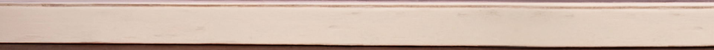
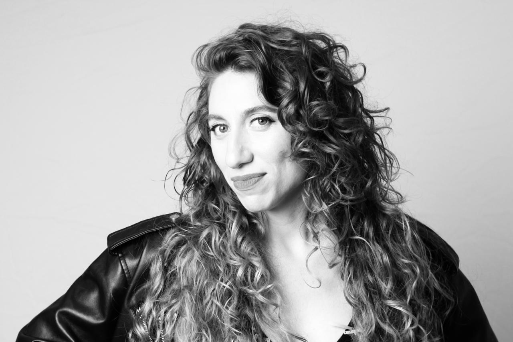

Novelas, Café & Masitas
Telenovelas, Coffee & Pastries


Sobre mí
About me
Danila Saiegh es una periodista y socióloga argentina recibida en la Universidad de Buenos Aires (UBA) que convirtió su educación sentimental frente al televisor de catorce pulgadas en una línea de investigación cultural y feminista. Co-conductora del influyente programa radial Furia Bebé, lleva años diseccionando las ficciones argentinas en su columna "Novelas, Café y Masitas". Ganadora del Premio Lola Mora, Danila analiza el melodrama como el archivo emocional y político de un país.
Leer más
Acaba de terminar Escenas de un capítulo anterior, un libro de ensayos sobre la telenovela donde reivindica el chisme, lo doméstico y lo romántico como saberes legítimos. Su trabajo desarma las estructuras del culebrón, la evolución de las masculinidades y las redes de amistad femenina en la pantalla, demostrando que estos productos televisivos funcionaron históricamente como un inesperado territorio de resistencia donde se trafican, a cuentagotas, retazos de emancipación. Con una amplia trayectoria en el mapa de medios argentino, colaboró para alguno de los diarios y revistas más importantes del país: Página/12, Revista Anfibia, Diario Perfil, Revista Brando y Cosecha Roja, medio con el cual obtuvo la beca de la Open Society Foundation para la cobertura de violencias y desigualdad. En su faceta audiovisual, es creadora del ciclo de YouTube Las Incansables, enfocado en rescatar historias de mujeres invisibilizadas, y dirigió el documental Mil Historias, un derecho junto a Amnistía Internacional y Women Equality Center (WEC).
Danila Saiegh is an Argentine journalist and sociologist with a degree from the University of Buenos Aires (UBA), who turned her emotional coming-of-age in front of a fourteen-inch television into a field of cultural and feminist research. Co-host of the influential radio show Furia Bebé, she has spent years dissecting Argentine fiction in her column "Novelas, Café y Masitas." A Lola Mora Award winner, Danila analyzes melodrama as the emotional and political archive of a nation.
Read more
She has just finished Escenas de un capítulo anterior (Scenes from a Previous Episode), an essay collection on the soap opera that reclaims gossip, the domestic sphere, and the romantic as legitimate forms of knowledge. Her work deconstructs the mechanics of the culebrón, the evolution of masculinities, and on-screen female friendships, demonstrating how these television products historically served as an unexpected territory of resistance where fragments of emancipation were smuggled in, drop by drop. With an extensive career across the Argentine media landscape, she has contributed to some of the country’s most prominent newspapers and magazines: Página/12, Revista Anfibia, Diario Perfil, Revista Brando, and Cosecha Roja—a outlet through which she was awarded an Open Society Foundation fellowship to cover violence and inequality. In her audiovisual work, she is the creator of the YouTube series Las Incansables, dedicated to rescuing the stories of invisible women, and directed the documentary Mil Historias, un derecho alongside Amnesty International and the Women Equality Center (WEC).

Mi libro sobre telenovelas
My book on telenovelas
Un recorrido por las telenovelas que nos criaron: la reivindicación de un género como escuela sentimental, archivo colectivo y anticipación de otros mundos. Un ensayos sobre las telenovelas que nos criaron y sobre todo lo que podemos encontrar en ellas cuando volvemos a mirarlas con otros ojos. Desde una mirada histórica, sociológica y feminista, recorre sus heroínas y galanes, sus historias de amor y de amistad entre mujeres, sus familias, trabajos, conflictos y chismes para preguntarse qué nos enseñaron sobre el deseo, los vínculos, el poder y las formas de vivir en común. Una lectura crítica y afectiva de un género que, además de acompañar nuestras vidas, fue construyendo sentidos sobre quiénes éramos, cómo cambiaba la sociedad y qué otros mundos podíamos imaginar.
Ideal para regalar o para acompañar una tarde de novelas, café y masitas.
Leé el capítulo 1 Read Chapter 1Columnas de Radio
Escuchá cada columna (20 minutos) sobre tus telenovelas favoritas.
telenovelas.csv.